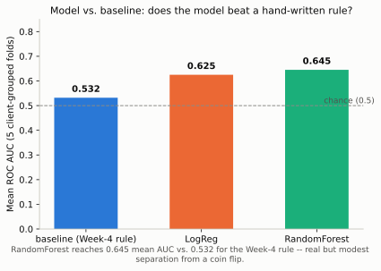
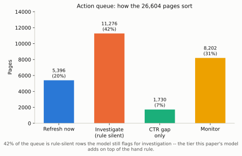

Abstract
Question. Across a content team's queue of already-published pages, which ones are declining in search performance right now, and which of those are worth a refresh?
Data. An anonymized FlyRank content-performance extract, 30,000 rows / 32 clients, filtered to 26,604 scorable pages (31 clients) where decline is arithmetically possible and a position is on record.
Method. A RandomForest ranking model, evaluated under a client-grouped split (never a random one — a random split lets the model learn which client a row belongs to instead of the actual signal), audited against five separate leakage failure modes, and compared against a hand-written CTR-shortfall rule on the same folds.
Headline result. The model reaches 0.645 mean ROC AUC against 0.532 for the rule — a real but modest lift. Under a careless random split the same model reads 0.767; the 0.122-point gap between the two is not free skill, it is measured client memorization.
What this is for. A ranked, reason-coded queue that tells a content editor what to open first — decision-support for a human reviewer, not an automated publishing pipeline, and not a causal claim that refreshing a flagged page will fix its decline.
Introduction
A content team with a few thousand published pages cannot review all of them by hand every sprint. Someone has to decide what gets opened first, and a wrong call costs something in either direction: flag a stable page and an editor spends the sprint on a page that never needed it; miss a genuinely declining page and it keeps losing clicks unreviewed for another month.
This project asked whether a model trained on the FlyRank content extract can rank that queue better than the obvious rule an editor would write without one — and, just as importantly, whether it can say so honestly: with the validation design that actually earns the number, and the limitations stated before a reader has to find them.
Data
Two data sources were used across this project, for two different jobs, and only one of them produced the numbers below.
- The anonymized starter extract —
data/raw/content_refresh_anonymized.csv, 30,000 rows, one row per content item. This is the source for every number on this page: the model, the baseline rule, the leakage audit, and the ranked queue. The label,trend_direction, isdownwhen 30-day impressions fell against the prior 30 days. - The FlyRank warehouse (queried in earlier weeks of this project) — used to develop and stress-test the leakage-hunting method on a genuine past-to-future label (features from one calendar month, label from the next), not to produce this page's headline numbers. Its label is defined on clicks, the extract's on impressions; the two are not comparable and nothing here mixes them.
Excluded from the scored population, and why: the label and its raw
material (never used as features); 1,205 rows with no recorded search position; and 2,191
rows where prior-period impressions were zero, meaning decline is arithmetically impossible
for that row rather than a real observation of stability. No client names, URLs, or raw search
queries appear anywhere in this dataset — client_id/content_id are
opaque hashes.
Methodology
Label and baseline
The label is a same-extract comparison, not a forecast — both halves of the 30-day-vs-prior window sit inside the same 90-day pull. The baseline a human would use without a model: a page is worth reviewing if it earns a smaller share of the clicks its position tier normally delivers, where "normally delivers" is measured per tier (weighted clicks/impressions), not assumed, and only scored once expected clicks clear a floor of 5 — below that floor a real zero-click page and a real underperformer are statistically indistinguishable.
Features and validation design
Two feature sets were built and reused everywhere: permissive (38 columns — everything that is not the label, an identifier, or a rule-derivation column) and strict (34 columns — permissive minus four columns that share a time window with the label's own impression comparison, even though they are not the label itself).
The population spans 31 clients, and one client alone is 26.2% of the rows — a random train/test split would let a model learn which client this is instead of the actual signal. Every result below uses a client-grouped 5-fold split (no client appears in both train and test within a fold) unless stated otherwise.
The leakage audit
Five checks, run against the shipped (permissive) feature set:
| Test | What it checks | Result |
|---|---|---|
| A — no leaky columns | None of the four label-derived columns reached the feature list | Pass |
| B — label's raw material | Add the label's own arithmetic back as a feature | 0.645 → 1.000 (+0.355) |
| C — grouped vs. random split | Does the split honesty actually matter here | 0.645 grouped vs. 0.767 random (+0.122 gap) |
| D — degenerate-label population | Rows where decline is arithmetically impossible, re-included | 0.645 → 0.686 (+0.041 inflation) |
| E — window-overlap columns | Value carried by columns sharing the label's time window | 0.645 permissive vs. 0.611 strict (+0.034) |
The number this page stands behind is 0.645 mean ROC AUC, on a client-grouped split, on the 26,604 rows where decline is arithmetically possible. Every other number in the table above is what that headline would look like if one of those controls were skipped.
Results
Same 5 client-grouped folds for every row in the table below:
| Model | Features | ROC AUC | P@10 | P@50 | P@100 | P@500 |
|---|---|---|---|---|---|---|
| Baseline (hand rule) | — | 0.532 | 0.760 | 0.808 | 0.782 | 0.746 |
| Logistic Regression | permissive | 0.625 | 0.740 | 0.796 | 0.760 | 0.740 |
| Logistic Regression | strict | 0.586 | 0.720 | 0.724 | 0.706 | 0.704 |
| RandomForest | permissive | 0.645 | 0.920 | 0.844 | 0.842 | 0.787 |
| RandomForest | strict | 0.611 | 0.840 | 0.868 | 0.812 | 0.771 |

ROC AUC and precision-at-K do not always agree: RandomForest/strict reads slightly higher at the top of the queue (P@50 0.868) than permissive (0.844), even though its overall AUC is lower (0.611 vs 0.645). Both numbers are reported because picking whichever one looks better would be fitting the story to the metric, not the other way around.
Limitations
- Client memorization is real and mostly what separates the two feature sets. The +0.122 grouped-vs-random gap means a real share of the model's apparent skill is recognizing which client a row belongs to, not predicting decline. For a client not in this 31-client population, only something closer to the non-memorized share of that skill should be assumed to carry over.
- Not clean of same-window correlation. The window-overlap columns carry +0.034 AUC on their own. At the row level, the average permissive-vs-strict probability gap is small (+0.004), but 15.3% of rows (4,083) shift by 0.05 or more between the two feature sets — the AUC cost concentrates in a minority of rows rather than spreading thinly across all of them.
- One fold is one client, not an average. The smallest of the 5 grouped folds is a single client (6,981 rows) — read its number as one client's result, not a representative average.
- Missing data is structured, not random.
word_countis missing on 25.7% of the raw extract, concentrated in one client (81.8% missing) and in low-ranking pages (49.3% missing at the lowest tier vs. 11.5% at the highest) — any test on the non-missing rows is measuring a sample biased toward already-better-performing content. days_since_last_updatecannot support a staleness claim. 57 distinct values cover 30,000 rows, five of which cover 87.8% of them — batch timestamps, not per-page freshness. Nothing here uses it as a freshness signal.- Cross-sectional, not causal, not a forecast. Every number describes one 90-day extract. “The model ranks pages by measured decline probability” is defensible; “refreshing these pages will fix decline” is not — no intervention was run here, only an association was measured.
- Two datasets, two labels, not comparable. The warehouse leakage-hunt used a clicks-based, past-to-future label on a different, larger population; nothing on this page averages or compares its numbers directly against the extract-based results above.
Ranked recommendations
The same out-of-fold model scores and rule scores above sort every page into one of four tiers: rule and model in agreement rank highest; rows where the rule is silent but the model is confident are flagged for investigation rather than automatic action; rows the rule flags but the model doubts stay in the queue, because the rule and the model answer different questions (is this page under-clicking its position, versus is it trending down).

| Tier | Pages | Meaning |
|---|---|---|
| 1Refresh now | 5,396 | Rule and model agree the page is underperforming. |
| 2Investigate | 11,276 | Rule is silent; model flags decline (70.2% true-decline rate in this snapshot). |
| 3CTR gap only | 1,730 | Rule found a real click gap; model isn't confident it's declining. |
| 4Monitor | 8,202 | Neither signal flags a problem right now. |
Read this as decision-support, not confirmation. The 70.2% figure is directional evidence the model adds signal the rule misses in this snapshot — not proof any specific refresh will work. This page ships a ranked list and reasons for a human to open; it does not publish or edit anything on its own, and it should never be the sole basis for an automated action. The full human-review checklist and no-go list live in the underlying notebook (linked below).
Reproducibility
To rerun: clone the repo, pip install -r requirements.txt, open
work/notebooks/capstone.ipynb, Run All. Every number and chart on this page
regenerates from data/raw/content_refresh_anonymized.csv with no external
dependency or hidden state.
Acknowledgments & data credit
Built on the FlyRank ML Internship dataset, an
anonymized content-performance extract provided for this internship. This page is the
ML-11 capstone of AI n-able Yourself — the paper and the notebooks it mirrors,
not a tutorial on method. Section 3's methodology critique in the underlying notebook
responds constructively to FlyRank's published SEO research paper (March 2026, included
in this repo under docs/).